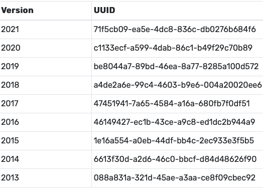

Scraping a table from a web page is typically pretty simple: just look in the page’s HTML for <table> tags, like this:
<table>
<tr>
<th>A</th>
<th>B</th>
<th>C</th>
</tr>
<tr>
<td>x</td>
<td>1</td>
<td>2</td>
</tr>
<tr>
<td>y</td>
<td>3</td>
<td>4</td>
</tr>
</table>
This HTML gives us a table with column headers A, B, and C, and two rows: one with data x, 1, and 2, and the other with data y, 3, and 4.
Modern web-scraping tools like R’s rvest package make it easy to find tables and read them into your scripts for further processing and analysis. Unfortunately, not all tables are created in the same way. Take the table below, for example, which occurs on this page:

The table lists versions (years of data) for the Medicare Part D by-provider dataset. Medicare Part D is the name for Medicare’s prescription drug benefit. The by-provider dataset contains prescribing data organized by providers—i.e., for each year of data there’s one row for each provider, with fields describing features of providers, the prescriptions they wrote, and the beneficiaries they wrote them for. I worked on a study where I used this dataset to model antibiotic prescribing rates across different geographic regions. The Center for Medicare and Medicaid Services, which publishes the dataset, makes it easy to get via API. The API call requries a UUID (universally unique identifier; the second column in the table above). My plan was to scrape all of the UUIDs and use them to retrieve all available years of the by-providers data.
The HTML source code for the page the table occurs on looks like this:
<!doctype html>
<html lang="en">
<head>
<base href="">
<title>Centers for Medicare & Medicaid Services Data</title>
<script type="text/javascript" defer="defer">
window.utag_cfg_ovrd = {
noview: !0
}
</script>
<script type="text/javascript" src="//tags.tiqcdn.com/utag/cmsgov/cms-data/prod/utag.sync.js" defer="defer"></script>
<script type="text/javascript" defer="defer">
!function(t, e, a, c) {
t = "//tags.tiqcdn.com/utag/cmsgov/cms-data/prod/utag.js",
a = "script",
(c = (e = document).createElement(a)).src = t,
c.type = "text/java" + a,
c.async = !0,
(t = e.getElementsByTagName(a)[0]).parentNode.insertBefore(c, t)
}()
</script>
<meta name="google-site-verification" content="1Zz9H6vs9l-q9fVNIgjKytNZG3NSQHvL500-iQIPJzQ"/>
<meta charset="utf-8"/>
<meta name="viewport" content="width=device-width,initial-scale=1"/>
<meta name="theme-color" content="#000000"/>
<link rel="manifest" href="/manifest.json"/>
<script defer="defer" src="/static/js/main.d5cc3d09.js"></script>
<link href="/static/css/main.ce9c48cc.css" rel="stylesheet">
</head>
<body>
<noscript>You need to enable JavaScript to run this app.</noscript>
<div id="root"></div>
</body>
</html>
Note that there’s not a table in sight. Instead what we get are a set of JavaScripts. What the page is doing is running JavaScript to dynamically create the table we’re interested in. Since there’s nothing like a <table> tag in the HTML source, plain vanilla techniques won’t be able to scrape the data we want.
Selenium is software that’s primarily used to automate the testing of web pages. But it can also bet used to get data from hard-to-scrape pages like the one we’re dealing with. Selenium can be set up to “drive” different web browsers (e.g., Firefox, Chrome). Crucially, when a Selenium-driven browser reads a page with JavaScript, it outputs the HTML that the JavaScript creates. This means that we can use Selenium to scrape tables created by JavaScript.
The easiest way to get Selenium up and running is to use a Docker container. If you don’t already have Docker Desktop installed, you can get it here. Once it’s in place, run the following commands in an R session:
# Open Docker Desktop (not necessary if it's already running)
system("open -a Docker")
Sys.sleep(30)
# Download the selenium-firefox image
system("docker pull selenium/standalone-firefox:2.53.1")
Sys.sleep(30)
# Start a selenium-firefox container on port 4445
system("docker run -d -p 4445:4444 selenium/standalone-firefox:2.53.1")
Sys.sleep(5)Sys.sleep() is used to pause execution while waiting for different actions to complete in the background (e.g., for Docker Desktop to open, or for the Selenium-Firefox image to download). You may need to increase the number of seconds that Sys.sleep() waits if the above code doesn’t execute correctly.
We now have a Docker container up and running. The container includes a Selenium server and a Firefox browser. The next step is to connect to the Selenium server. We can use it to tell Firefox to navigate to the page we want to scrape.
There are lots of programming languages that have bindings to Selenium. You can view a list of them here. We’re going to use the bindings provided in the R package RSelenium. We’ll additionally use a few tools from the rvest package to scrape the table we want.
Here’s how to connect to the Selenium server and navigate to the page we want to scrape:
library(RSelenium)
# URL of the page we want to scrape
url <- "https://data.cms.gov/provider-summary-by-type-of-service/medicare-part-d-prescribers/medicare-part-d-prescribers-by-provider/api-docs"
# Create a remote driver that will communicate with the Selenium server on port
# 4445.
remote <- remoteDriver(port = 4445)
# Open a connection to the server
remote$open()## [1] "Connecting to remote server"
## $applicationCacheEnabled
## [1] TRUE
##
## $rotatable
## [1] FALSE
##
## $handlesAlerts
## [1] TRUE
##
## $databaseEnabled
## [1] TRUE
##
## $version
## [1] "47.0.1"
##
## $platform
## [1] "LINUX"
##
## $nativeEvents
## [1] FALSE
##
## $acceptSslCerts
## [1] TRUE
##
## $webdriver.remote.sessionid
## [1] "79effbdd-c6ef-4fab-abdc-9e046aca61f1"
##
## $webStorageEnabled
## [1] TRUE
##
## $locationContextEnabled
## [1] TRUE
##
## $browserName
## [1] "firefox"
##
## $takesScreenshot
## [1] TRUE
##
## $javascriptEnabled
## [1] TRUE
##
## $cssSelectorsEnabled
## [1] TRUE
##
## $id
## [1] "79effbdd-c6ef-4fab-abdc-9e046aca61f1"Sys.sleep(5)
# Navigate to URL
remote$navigate(url)
Sys.sleep(5)And here’s where we do the scraping. getPageSource() is an RSelenium function that returns a page’s HTML. From there I switch to a couple of functions from rvest. These are a bit easier to work with than the RSelenium functions. read_html() returns an XML document; html_table() returns all tables in the XML document as a list of R dataframes. The second dataframe is the one we want.
library(rvest)
# Scrape tables
tables <-remote$getPageSource()[[1]] %>%
read_html() %>%
html_table()
# The second table has the UUIDs we want
target <- tables[[2]]
target## # A tibble: 9 × 2
## Version UUID
## <int> <chr>
## 1 2021 71f5cb09-ea5e-4dc8-836c-db0276b684f6
## 2 2020 c1133ecf-a599-4dab-86c1-b49f29c70b89
## 3 2019 be8044a7-89bd-46ea-8a77-8285a100d572
## 4 2018 a4de2a6e-99c4-4603-b9e6-004a20020ee6
## 5 2017 47451941-7a65-4584-a16a-680fb7f0df51
## 6 2016 46149427-ec1b-43ce-a9c8-ed1dc2b944a9
## 7 2015 1e16a554-a0eb-44df-bb4c-2ec933e3f5b5
## 8 2014 6613f30d-a2d6-46c0-bbcf-d84d48626f90
## 9 2013 088a831a-321d-45ae-a3aa-ce8f09cbec92The API to retrieve by-provider data takes a URL as input and returns data in JSON format. The URL is made up of a base, a dataset UUID, and a suffix. In the example below, I use the UUID for the 2021 dataset, and include “?size=5” in the suffix to limit the returned data to the first five records:
# Pieces of the URL string
base <- "https://data.cms.gov/data-api/v1/dataset/"
uuid <- "71f5cb09-ea5e-4dc8-836c-db0276b684f6"
suffix <- "/data?size=5"
# Paste pieces together to make the complete URL
url <- paste0(base, uuid, suffix)Once the URL has been constructed, the data can be retrieved as follows:
library(jsonlite)
library(dplyr)
# Read JSON data at URL and convert to tibble
fromJSON(url) %>%
as_tibble()Now we have all of the pieces we need to iterate over our UUIDs to collect all of the by-provider data (or at least the first five rows from each year):
library(purrr)
# Loop over UUIDs
data <- map(target$UUID, function(uuid) {
# Construct URL
base <- "https://data.cms.gov/data-api/v1/dataset/"
uuid <- uuid
suffix <- "/data?size=5"
url <- paste0(base, uuid, suffix)
# Get data
fromJSON(url) %>%
as_tibble() }) %>%
list_rbind()
# Show sample columns
data %>%
select(PRSCRBR_NPI, Prscrbr_Type, Prscrbr_Gndr, Prscrbr_RUCA,
Antbtc_Tot_Clms, Tot_Benes, Bene_Avg_Risk_Scre, Bene_Avg_Age)## # A tibble: 45 × 8
## PRSCRBR_NPI Prscrbr_Type Prscrbr_Gndr Prscrbr_RUCA Antbtc_Tot_Clms Tot_Benes
## <chr> <chr> <chr> <chr> <chr> <chr>
## 1 1003000126 Internal Med… M 1 "59" "358"
## 2 1003000142 Anesthesiolo… M 1 "" "299"
## 3 1003000167 Dentist M 2 "35" "35"
## 4 1003000175 Dentist F 1 "15" "11"
## 5 1003000423 Obstetrics &… F 1 "" "66"
## 6 1003000126 Internal Med… M 1 "42" "106"
## 7 1003000142 Anesthesiolo… M 1 "" "228"
## 8 1003000167 Dentist M 2 "46" "43"
## 9 1003000175 Dentist F 1 "16" ""
## 10 1003000282 Nurse Practi… F 1 "" ""
## # ℹ 35 more rows
## # ℹ 2 more variables: Bene_Avg_Risk_Scre <chr>, Bene_Avg_Age <chr>